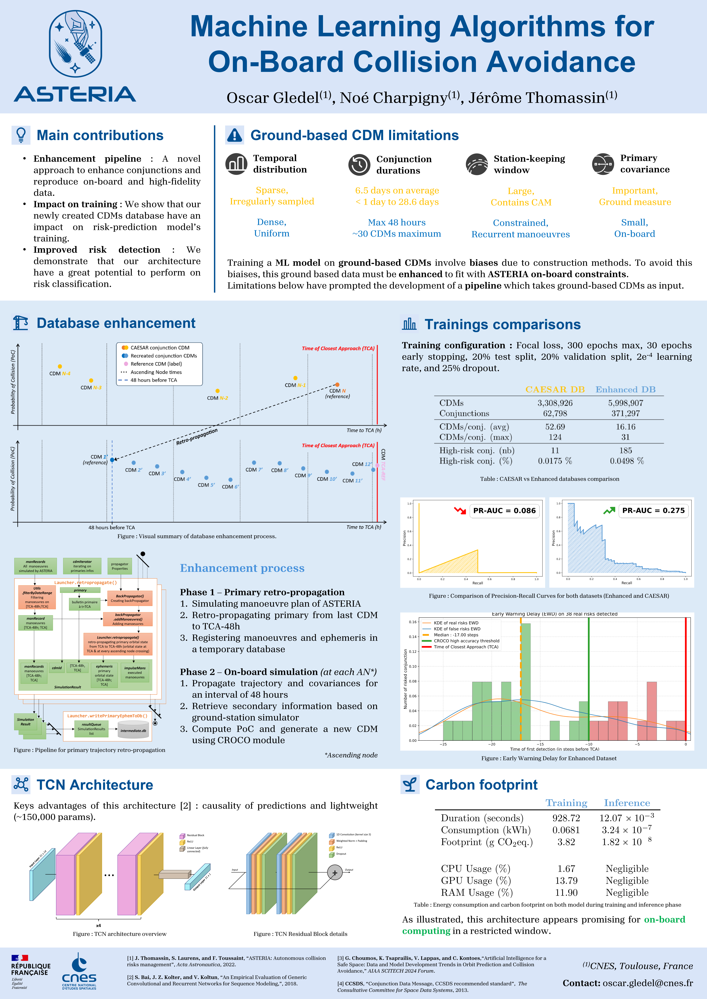

AboutI am a final-year Master's student in Artificial Intelligence, with a focus on image processing and computer graphics. I am very interested in academic research, specialy in point cloud computing and real time rendering, and plan to pursue a PhD in the coming years. |
 |
Machine Learning Algorithm for On-Board Collision AvoidanceOscar Gledel, Noé Charpigny, Jérôme Thomassin, International Symposium on Space-Flight Dynamics (ISSFD) 2026 ALIGATOR is a machine learning based decision-making system designed for fully autonomous onboard collision risk mitigation. Its decision-making process relies on a time horizon that depends on the responsiveness of the propulsion system. It uses time series of situational data recalculated on board to support its decision. High-quality training data is crucial to ensure model’s performance and avoid biases. In this paper, we show how to address this challenge by combining real data with generated additional data using an innovative simulator. First, the simulator’s architecture and the pipeline used to generate the training data are detailled. Then, a presentation of the feature selection process for model training is done, as well as the selection of the model itself, drived by the idea of minimizing biases. Subsequently, the choice of the model is discussed starting from models that have been thoroughly studied. Finally, the initial training results are presented, demonstrating the effectiveness of the approach. |